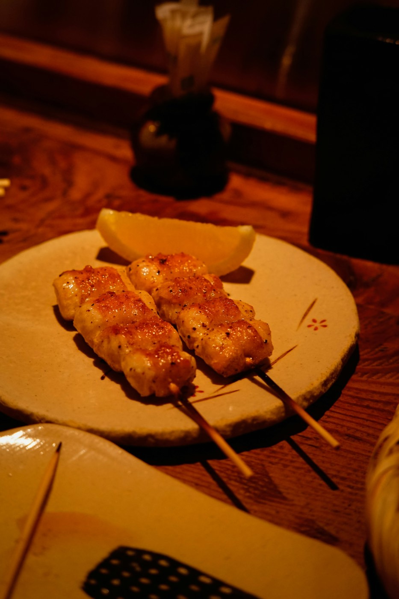
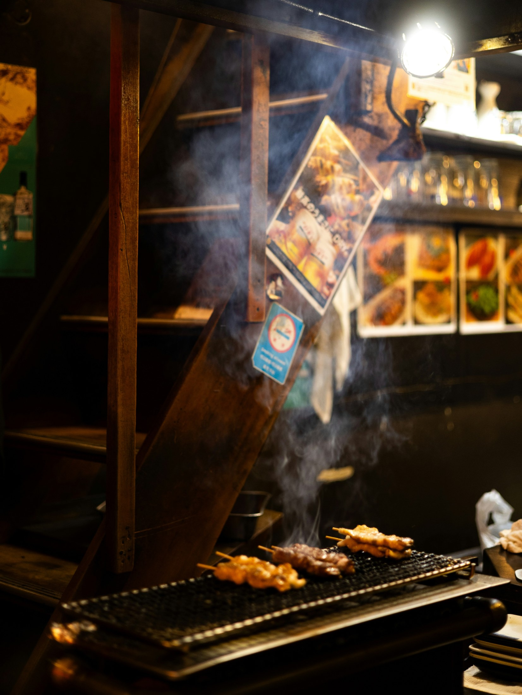
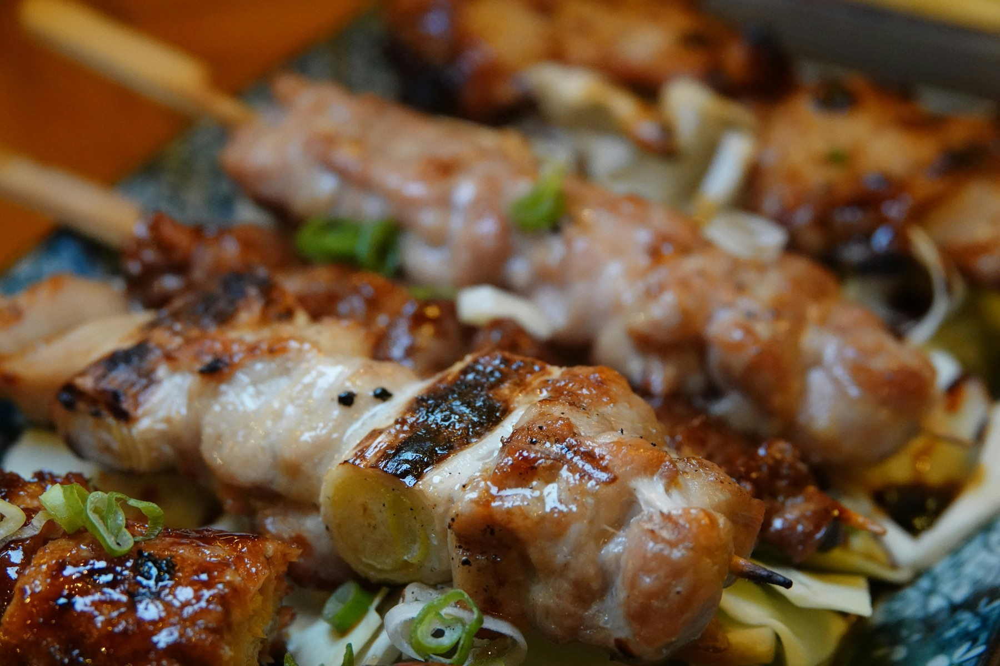
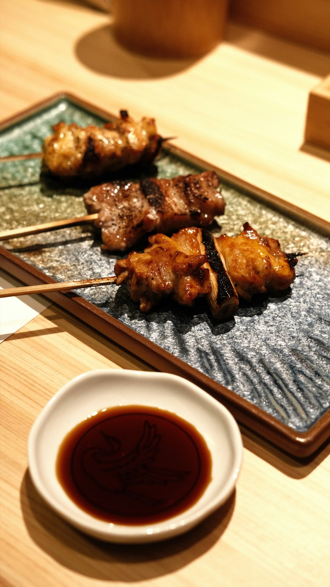
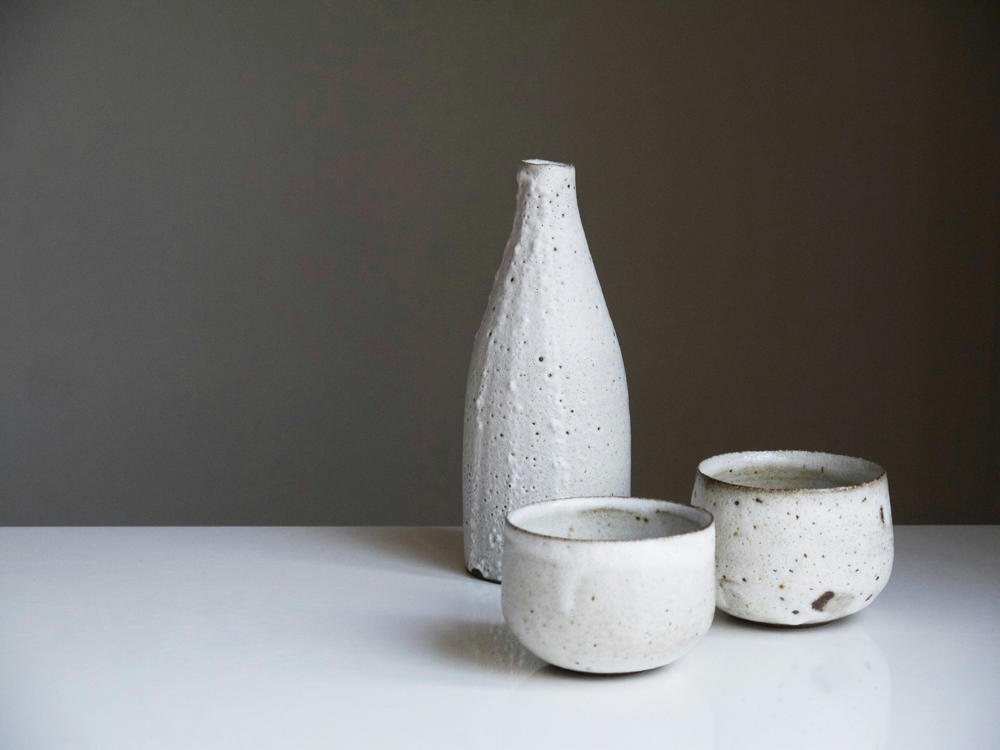
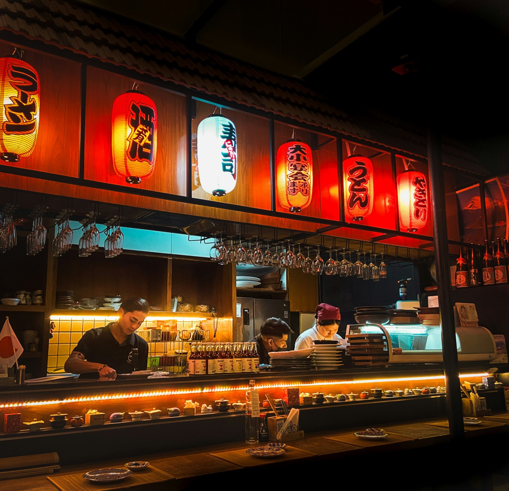

あかり
あかりコース
4,500円（税込）
おすすめの串焼き7本と、季節の一品3品。はじめての方にもおすすめです。

炭の香りに、
ほどける夜。
SUMIBI YAKITORI AKARI — TENMA, OSAKA
Scroll三つのこだわり01 — Binchotan
火力が強く、長く燃える備長炭。表面はパリッと、中はふっくら。炭火ならではの香ばしさを、一本一本に閉じこめます。

三つのこだわり02 — Fresh Chicken
その日の朝にさばいた国産の鶏を、店で一本ずつ串打ち。部位ごとに大きさを変え、いちばんおいしい焼き加減に。

三つのこだわり03 — Secret Sauce
開店の日から毎日つぎ足してきた、甘さひかえめのタレ。鶏のうまみがとけこんだ、あかりだけの味です。
Menu
品名にふれると、写真をご覧いただけます。
※価格はすべて税込です。仕入れにより、品切れの場合がございます。

焼き鳥に合う酒を、
全国の蔵から季節ごとに。
お好みをうかがって、
一杯をお出しします。
Course

あかりコース
4,500円（税込）
おすすめの串焼き7本と、季節の一品3品。はじめての方にもおすすめです。
おまかせ宴会コース
6,000円（税込・2時間飲み放題つき）
串焼き8本、一品4品、〆の親子丼。4名様から個室でご利用いただけます。

News
冬季限定「鴨ねぎ串」はじめました。
新潟の蔵から、ひやおろしが入荷しました。
11月23日（月・祝）は、臨時休業いたします。